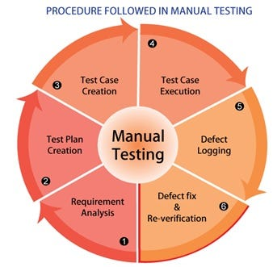

Software testing is a vital process in software development that ensures the quality and reliability of a
software product by verifying that it meets user requirements and performs as expected. It involves
identifying and fixing errors and bugs to deliver a high-performing and bug-free software application.
Software testing is a vital process in software development that ensures the quality
and reliability of a
software product by verifying that it meets user requirements and performs as expected. It involves
identifying and fixing errors and bugs to deliver a high-performing and bug-free software application.

Automation testing is a software testing technique that uses automated tools and scripts to execute test
cases, compare actual outcomes with expected results, and report the results. It enhances testing
efficiency,
accuracy, and coverage by automating repetitive tasks and allowing for faster feedback in the software
development lifecycle.